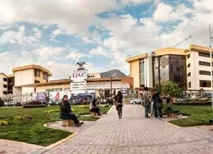
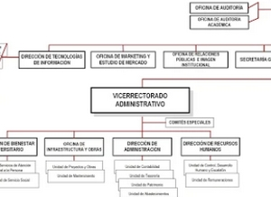
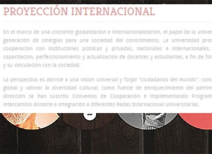
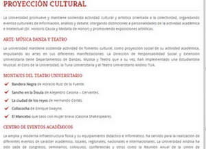

More Website Templates @ TemplateMonster.com - September 14, 2013!
ORGANIZACIÓN DE LA UNIVERSIDAD
{kind=link}

{kind=link}
Organización Académica
La Universidad Andina del Cusco tiene:
- -05 Facultades
{kind=link}
{kind=link}
{kind=link}

{kind=link}
ORGANIGRAMA UAC

En el marco de una creciente globalización e internacionalización, el papel de la universidad resulta fundamental en la generación de sinergias para una sociedad del conocimiento. Ir a la pagina
{kind=link}
PROYECCION INTERNACIONAL
En el marco de una creciente globalización e internacionalización, el papel de la universidad resulta fundamental en la generación de sinergias para una sociedad del conocimiento. Ir a la pagina

Ir a la pagina
{kind=link}
PROYECCION CULTURAL
La Universidad promueve y mantiene sostenida actividad cultural y artística orientada a la colectividad, organizando eventos culturales de información, análisis y debate; otorgando distinciones a personalidades de la actividad académica e intelectual (Dr. Honoris Causa y Medalla de Honor) y promoviendo exposiciones artísticas. Ir a la pagina